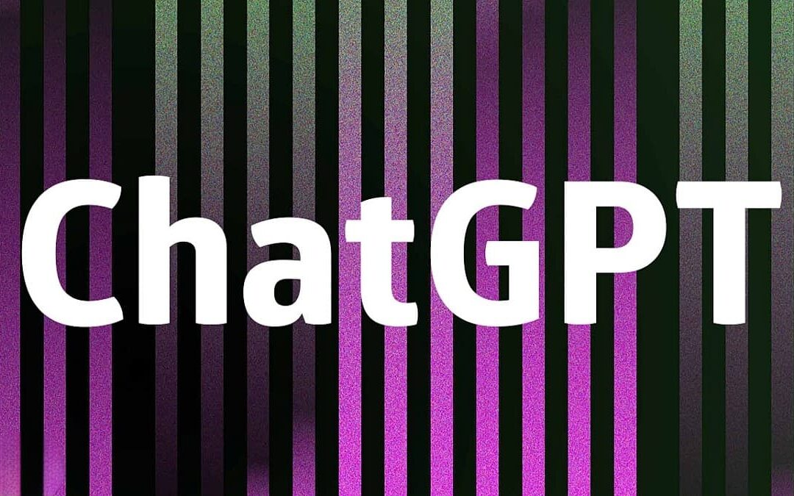

1957 aparece ARPANET que abriria las puertas a la red que hoy conocemos

1991 Tim Berners Lee, crea la Word Wide Web mas conocida como WWW.

1992 Se funda ISOC que ayudo al desarrollo de protocolos
2001 Se pasa de una web informativa, creada por expertos a una web social, donde cualquiera puede participar fácilmente.

CMS Un Sistema de Gestión de Contenidos (Content Management System), permite la creación y administración de contenidos principalmente en páginas web.

2005 Es una técnica de desarrollo web que combina varias tecnologías , consiguiendo una navegación más ágil y rápida, más dinámica.
2010 Con la liberacion de HTML 5 se abre camino a la WEB 3.0

WEB SEMANTICA Esta fundamentada en la tecnología de la cadena de bloques o Blockchain
2004 El término fue oficialmente acuñado por Tim O'Reilly. Ya no sólo consumimos información, sino que empezamos escribir y a producir contenido. Así la web se convierte en un espacio bidireccional centrado en las personas.
2022 Chat GPT, prototipo de inteligencia artificial, por la compañía OpenAI es un nuevo sistema de chatbot que responde a una variedad de preguntas y realiza tareas por escrito a partir de órdenes.
